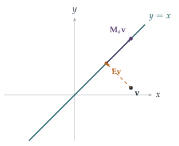

STEP III 1996，第 6 題
繼續之前，請先閱讀題目（原題為英文）。題目載於 STEP Support Programme 的題目資料庫： step.maths.org/questions/96-s3-q6
引子
每個學生都學過：行列式（determinant）為零的矩陣沒有逆矩陣。那麼，一個由矩陣組成的羣（group），既然其中每個元素都有逆元（inverse），就肯定不可能包含任何奇異矩陣（singular matrix）吧？
其實可以。關鍵在於「逆」這個字。在羣裏，\(\mathbf{A}\) 的逆元是指與 \(\mathbf{A}\) 結合後得出該羣的單位元（identity element）的那個元素，而沒有任何規定說羣的單位元必須是單位矩陣（identity matrix）\(\mathbf{I}\)。本題構造出一個羣，其中每個矩陣都是奇異的，而單位元本身就是一個行列式為零的矩陣。這一課教我們要按字面去讀定義，也教我們分清抽象結構與我們最初認識它時所見的那個熟悉例子。
動筆之前
羣的定義見 第 6.6 節。
在第 (i) 部分，單位矩陣 \(\mathbf{I}\) 並不是 \(\begin{pmatrix} a & a \\ a & a \end{pmatrix}\) 這種形式。那麼 \(S\) 的單位元會是甚麼？
它必須是 \(S\) 中的某個矩陣 \(\mathbf{E}\)，使得對 \(S\) 中每個 \(\mathbf{X}\) 都有 \(\mathbf{E}\mathbf{X} = \mathbf{X}\mathbf{E} = \mathbf{X}\)。這個條件只涉及 \(\mathbf{E}\) 怎樣作用於這種特殊形式的矩陣，而不是所有矩陣。解方程就可以把它找出來。
逐步解題
階段 1 封閉性（closure）
以 \(\mathbf{M}_a\) 表示四個項全都等於 \(a\) 的矩陣。那麼 \[\mathbf{M}_a\mathbf{M}_b = \begin{pmatrix} a & a \\ a & a \end{pmatrix}\begin{pmatrix} b & b \\ b & b \end{pmatrix} = \begin{pmatrix} 2ab & 2ab \\ 2ab & 2ab \end{pmatrix} = \mathbf{M}_{2ab},\] 而當 \(a, b \neq 0\) 時，\(2ab \neq 0\)。所以 \(S\) 是封閉的。■
階段 2 羣公理（group axioms）
矩陣乘法滿足結合律。至於單位元，解 \(\mathbf{M}_e\mathbf{M}_a = \mathbf{M}_a\)。至於逆元，解 \(\mathbf{M}_a\mathbf{M}_b = \mathbf{M}_e\)。
結合律（associativity）由矩陣乘法繼承而來。單位元：\(\mathbf{M}_e\mathbf{M}_a = \mathbf{M}_{2ea} = \mathbf{M}_a\) 對所有 \(a\) 成立，當且僅當 \(e = \frac12\)；由於公式是對稱的，\(\mathbf{M}_a\mathbf{M}_{1/2} = \mathbf{M}_a\) 同樣成立。所以 \[\mathbf{E} = \begin{pmatrix} \frac12 & \frac12 \\ \frac12 & \frac12 \end{pmatrix}\] 是 \(S\) 的單位元。逆元：當 \(b = \frac{1}{4a}\) 時，\(\mathbf{M}_a\mathbf{M}_b = \mathbf{M}_{2ab} = \mathbf{M}_{1/2}\)，而這個值不為零，所以 \(\mathbf{M}_{1/(4a)}\) 是 \(\mathbf{M}_a\) 在 \(S\) 中的逆元。因此 \(S\) 是一個羣。■ 每個元素的行列式都是 \(a^2 - a^2 = 0\)。
階段 3 奇異性會蔓延
假設 \(\mathbf{A} \in G\) 是奇異的，並設 \(\mathbf{B}\) 為 \(G\) 的任意元素。把 \(\mathbf{B}\) 寫成一個含有 \(\mathbf{A}\) 的乘積，然後取行列式。
以 \(\mathbf{A}^{-1}\) 表示 \(\mathbf{A}\) 在羣 \(G\) 中的逆元（不一定是逆矩陣）。那麼 \(\mathbf{C} = \mathbf{A}^{-1}\mathbf{B}\) 屬於 \(G\)，而且 \[\mathbf{A}\mathbf{C} = \mathbf{A}\mathbf{A}^{-1}\mathbf{B} = \mathbf{E}\mathbf{B} = \mathbf{B}.\] 取行列式，得 \(\det\mathbf{B} = \det\mathbf{A}\,\det\mathbf{C} = 0\)。所以 \(G\) 的每個元素都是奇異的。■ 特別地，如果一個矩陣羣中有一個元素作為矩陣是可逆（invertible）的，那麼所有元素都可逆；一個矩陣羣要麼全部可逆，要麼全部奇異。
階段 4 一個 \(3 \times 3\) 的例子
你能把第 (i) 部分推廣到 \(3 \times 3\) 矩陣嗎？或者找一個更簡單的例子，用一個「無視」三個坐標中其中兩個的矩陣？
取 \[G = \left\{\begin{pmatrix} a & 0 & 0 \\ 0 & 0 & 0 \\ 0 & 0 & 0 \end{pmatrix} : a \neq 0\right\}.\] 角上的項分別為 \(a\) 和 \(b\) 的兩個矩陣，乘積就是角上的項為 \(ab\) 的矩陣，所以 \(G\) 是封閉的；乘法滿足結合律；單位元是角上的項為 \(1\) 的矩陣；角上的項為 \(a\) 的矩陣，其逆元是角上的項為 \(\frac1a\) 的矩陣。所以 \(G\) 是一個羣，而且每個元素的行列式都是 \(0\)。■ （另一個例子：九個項全都等於 \(a \neq 0\) 的 \(3 \times 3\) 矩陣，其單位元的所有項都是 \(\frac13\)。）
回顧
按字面去讀定義。羣的單位元就是在該羣之內起單位元作用的那個元素；它不一定是我們熟悉的那個單位矩陣。
解方程求出結構。\(S\) 的單位元和逆元都是靠解方程找出來的，而不是靠猜。
行列式具有可乘性。單憑這一個性質，就說明了奇異性會由一個元素蔓延到所有元素。
背後的數學
任何矩陣羣的單位元 \(\mathbf{E}\) 都滿足 \(\mathbf{E}^2 = \mathbf{E}\)：它是冪等（idempotent）的。從幾何上看，冪等矩陣就是一個投影（projection）：它把每個向量映射到某個子空間（subspace）上，而原本已在該子空間內的向量則保持不變。在第 (i) 部分，\(\mathbf{E}\) 把平面投影到直線 \(y = x\) 上，而每個矩陣 \(\mathbf{M}_a\) 都是先投影到這條直線上，然後沿着它以因子 \(2a\) 拉伸（圖 6.8.1）。在這條直線上，這個羣的作用是可逆的拉伸；它只是無視了與直線垂直的方向。所以 \(S\) 其實就是非零實數的乘法羣（透過 \(\mathbf{M}_a \mapsto 2a\)），只不過它棲身於平面內的一條直線上。這個結論普遍成立：每個由矩陣組成的羣，經過換基（change of basis）之後，都是一個由可逆矩陣組成的羣，作用於其單位元的像上，其餘位置則以零填充。

抽象與具體
人們最早研究的羣都是具體的：置換（permutation）、對稱、可逆矩陣。抽象的定義（一個集合連同一個滿足三條公理的運算）是從這些例子中提煉出來的。本題顯示了抽象觀點的價值：\(S\) 與非零實數的乘法羣是同構（isomorphic）的，即同一個羣換了一身衣服，儘管一個由奇異矩陣組成，另一個由數組成。辨認出兩個外表不同的結構何時「相同」，是代數最核心的技巧之一，而數學家正是藉同構這個概念把這種「相同」說得精確。
思維技巧
當一個熟悉的對象出現在抽象定義中時，要查清楚定義實際上要求它具備哪些我們熟悉的性質。
「矩陣羣的單位元是 \(\mathbf{I}\)」聽起來理所當然，卻不是定義的一部分；放下這個假設，就得出了一個真正嶄新的例子。許多新的數學結構，正是這樣靠質疑假設而發現的。
延伸練習
一個同構。證明映射 \(\mathbf{M}_a \mapsto 2a\) 是由 \(S\) 到非零實數的一一對應（one-to-one correspondence），並且把矩陣乘法變成數的乘法。
不是羣。證明所有形如 \(\begin{pmatrix} a & b \\ 0 & 0 \end{pmatrix}\) 且 \(a \neq 0\) 的矩陣所組成的集合在乘法下封閉，但不是一個羣。（提示：試找單位元。有沒有左單位元？有沒有右單位元？）
冪等元。求所有滿足 \(\mathbf{E}^2 = \mathbf{E}\) 的 \(2 \times 2\) 實矩陣 \(\mathbf{E}\)，並從幾何角度描述它們。
所有項相等。證明所有項都等於 \(a \neq 0\) 的 \(n \times n\) 矩陣在乘法下構成一個羣，並求它的單位元。
延伸閱讀
M. A. Armstrong, Groups and Symmetry（Springer）。講述矩陣羣與同構，並附有大量幾何例子。
Gilbert Strang, Introduction to Linear Algebra（Wellesley-Cambridge）。對投影與冪等矩陣有清晰的講解。
Joseph Gallian, Contemporary Abstract Algebra（CRC Press）。一本平易近人的入門教材，載有許多不尋常的羣的例子。